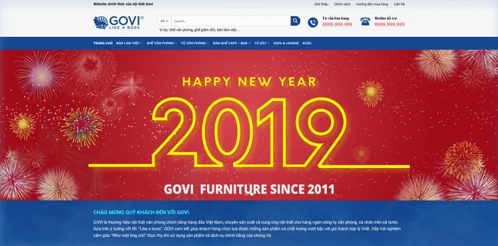
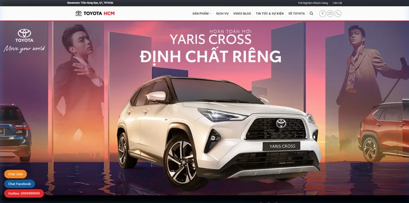
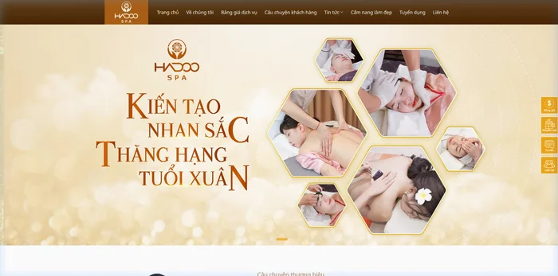
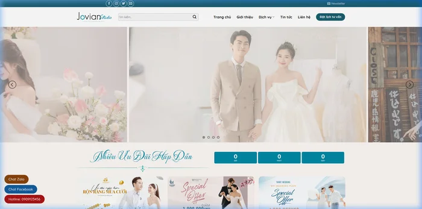

Thiết kế độc quyền
Giao diện mang đúng cá tính thương hiệu.
Không đóng khung vào một mẫu có sẵn. Bố cục và cách thể hiện được định hình theo ngành nghề, nội dung và mục tiêu của doanh nghiệp.
Tìm hiểu cách làmThiết kế website VMAX
Một website độc quyền cho cách thương hiệu của bạn muốn được nhớ đến — được thiết kế để dễ dùng, tải nhanh và sẵn sàng phát triển cùng doanh nghiệp.
Số liệu do VMAX công bố.



01 / Giải pháp thiết kế website
Thiết kế, nội dung và nền tảng kỹ thuật cùng phối hợp để website tạo trải nghiệm rõ ràng cho khách hàng — và vững vàng cho đội ngũ quản trị.
Thiết kế độc quyền
Không đóng khung vào một mẫu có sẵn. Bố cục và cách thể hiện được định hình theo ngành nghề, nội dung và mục tiêu của doanh nghiệp.
Tìm hiểu cách làmChuẩn SEO
Cấu trúc trang, tốc độ và trải nghiệm thân thiện với thiết bị di động.
Tốc độ
Kiến trúc gọn, hướng tới PageSpeed 95–100 theo gói dịch vụ. Tốc độ tải theo công bố của VMAX.
Responsive
Responsive cho desktop, tablet và điện thoại.
Quản trị dễ dàng
100%Dễ quản trị, chủ động phát triển sau bàn giao.
02 / Website VMAX đã triển khai

Xem chi tiết dự án ↗Hình ảnh và liên kết dẫn tới các dự án VMAX đã công bố.
03 / Giải pháp theo ngành
Từ showroom, bất động sản đến dịch vụ chăm sóc sức khỏe — website bắt đầu từ đặc thù thật của thương hiệu, không phải một bố cục lặp lại.
04 / Tại sao chọn VMAX
Mục tiêu hiệu năng được VMAX công bố cho dịch vụ thiết kế website.
Cấu trúc kỹ thuật và trải nghiệm được tính đến trong quá trình xây dựng.
Doanh nghiệp sở hữu mã nguồn và tài sản số sau khi hoàn tất bàn giao.
Chính sách bảo hành và hỗ trợ theo thông tin dịch vụ đang công bố.
05 / Quy trình triển khai
Từng giai đoạn có đầu việc cụ thể để doanh nghiệp nắm tiến độ, góp ý đúng lúc và nghiệm thu có cơ sở.
Lắng nghe mục tiêu, khách hàng và phạm vi website.
Đề xuất cấu trúc và giải pháp phù hợp với nhu cầu.
Thống nhất bố cục, nội dung và hướng trải nghiệm.
Hoàn thiện giao diện và chức năng theo phương án.
Kiểm tra hiển thị, tốc độ và các luồng chức năng.
Chuyển giao mã nguồn và hướng dẫn quản trị.
06 / Bảng giá thiết kế website
Giá tham khảo theo thông tin VMAX công bố. Chi phí cuối cùng tùy phạm vi, nội dung và tính năng thực tế.
Gói 01
Nền tảng hiện diện chuyên nghiệp
Gói 02
Lựa chọn tăng trưởng toàn diện
Gói 03
Cho hệ thống phức tạp
* Giá và quyền lợi theo thông tin VMAX đang công bố; vui lòng trao đổi để nhận báo giá chính xác theo phạm vi dự án.
07 / Khách hàng đồng hành
Website tải nhanh hơn, hỗ trợ cải thiện lượng đơn hàng trực tuyến.
Đánh giá tích cực về báo cáo SEO và khả năng cải thiện thứ hạng.
Hài lòng với sự ổn định của website và cách hỗ trợ kỹ thuật.
Phản hồi được VMAX công bố từ khách hàng đã sử dụng dịch vụ.
08 / FAQ
Giải đáp một số câu hỏi thường gặp về thời gian, mã nguồn, hiệu năng và hỗ trợ.
Thông thường quy trình thiết kế và lập trình website độc bản tại VMAX kéo dài từ 7 đến 15 ngày làm việc, tùy quy mô tính năng và độ phức tạp giao diện.
VMAX công bố bàn giao 100% mã nguồn, cơ sở dữ liệu và tài sản số liên quan sau khi hoàn tất dự án.
Theo thông tin dịch vụ VMAX, website được tối ưu On-page, thân thiện di động và hướng tới PageSpeed 90+ trên Mobile & Desktop; gói Nâng Cao công bố PageSpeed 95–100.
VMAX công bố bảo hành kỹ thuật trọn đời khi sử dụng hosting của VMAX, hỗ trợ xử lý sự cố 24/7 và sao lưu dữ liệu định kỳ.
Giá trên trang là mức tham khảo. Chi phí chính thức phụ thuộc vào phạm vi giao diện, tính năng, nội dung và các tích hợp theo yêu cầu.
Bắt đầu từ một cuộc trao đổi
Chia sẻ mục tiêu, VMAX sẽ cùng bạn tìm hướng triển khai phù hợp.